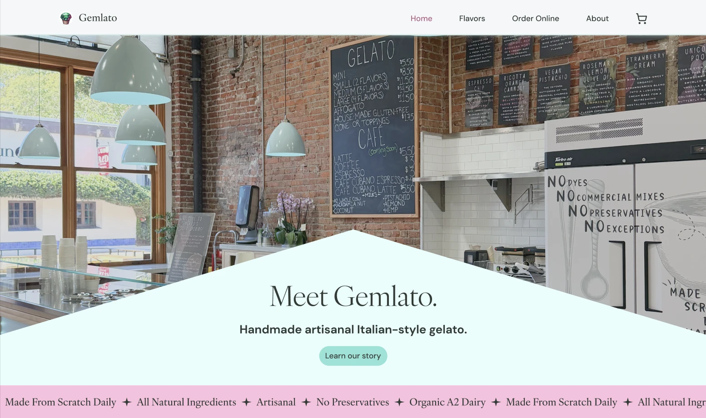
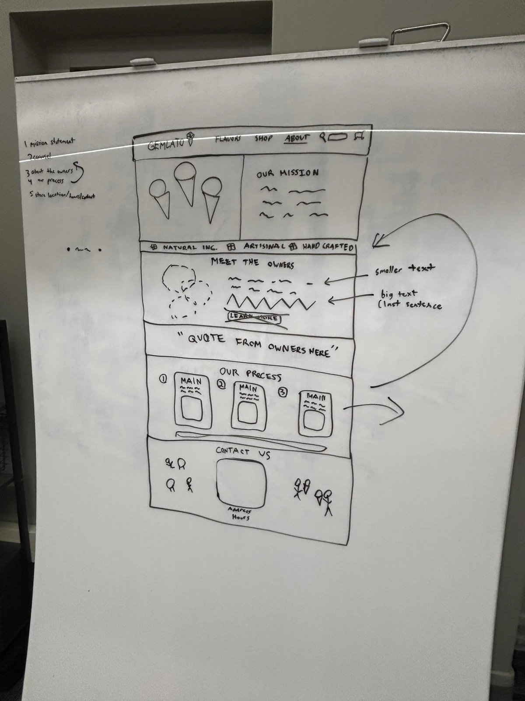
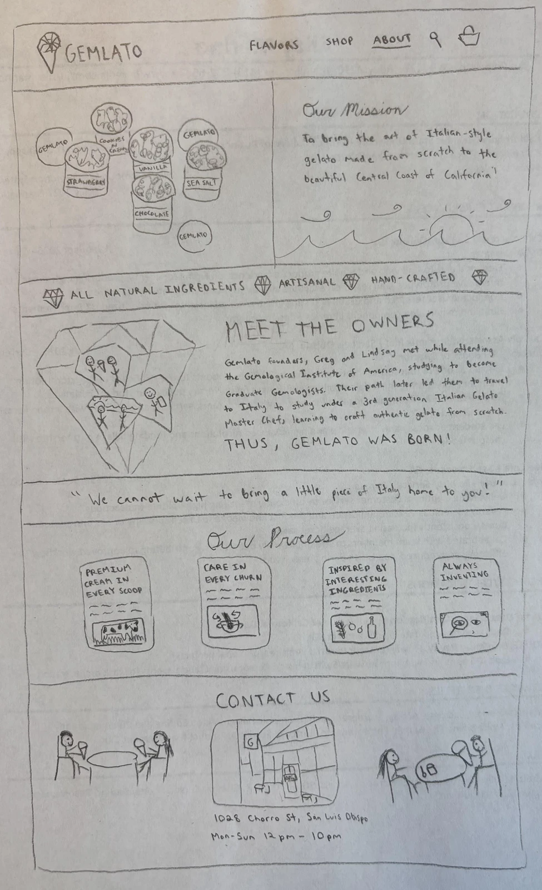
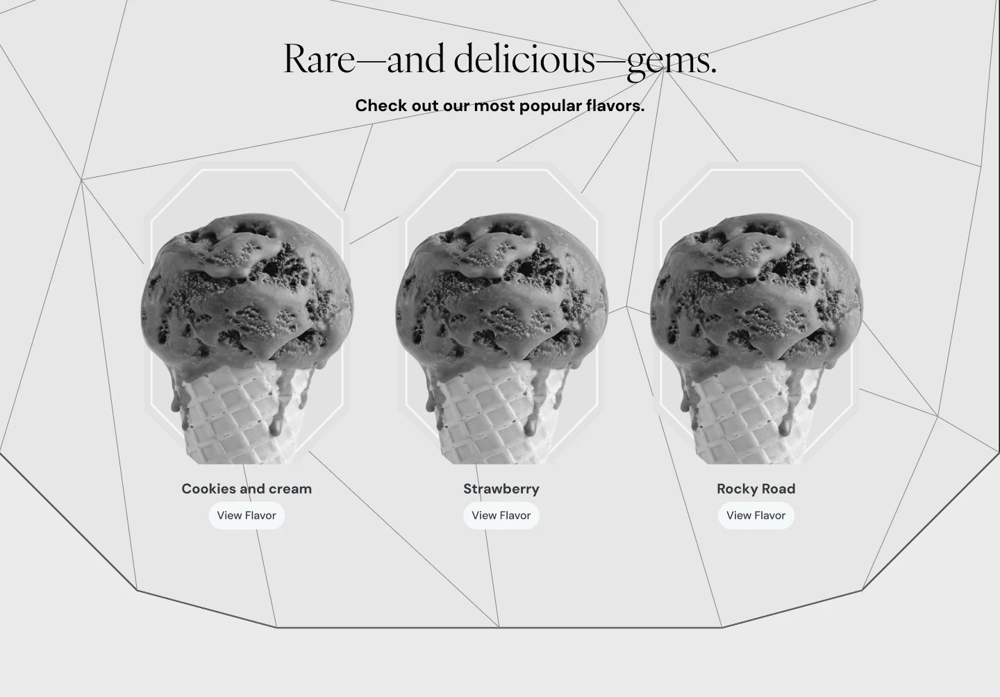
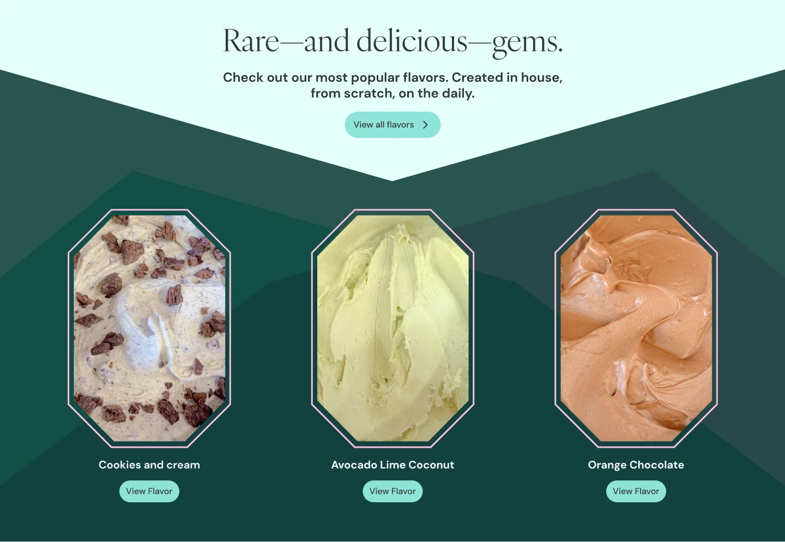

Client Website Transformation
Gemlato
Bringing a San Luis Obispo gelato counter to the screen.
Gemlato makes Italian-style gelato by hand. Our team worked with the shop as a real client, taking the website from UX research and paper sketches to a high-fidelity design and final presentation.

UX Interviews: Listening Before Designing
In a couples interview I conducted, I asked about the last time the participants went out for ice cream. One recalled a late-night trip where the deciding factor was simply which place was still open. Talking through a real outing brought out a practical detail that a question about favorite flavors alone would have missed.
Another interview surfaced a different decision: one participant checked for a favorite flavor first and wanted to know which ingredients to avoid. In later prototype testing, a participant looked through the flavor photos for something chocolatey and used the nut-free option when prompted. Together, those moments help explain why the flavor browser matters as much as the homepage.
Explore the research in FigJam ↗Low Fidelity: Giving the Story a Structure
Our early About page sketches make the content hierarchy visible. The mission comes first, followed by the owners, the gelato-making process, and contact information. Even on paper, the ingredient claims have their own strip between sections.




The Design System
The final homepage shows how the visual language fits the client. A fine serif introduces “Meet Gemlato.” A heavier sans serif carries the product description, while a rounded mint button marks the next action. The pink ingredient strip is prominent enough to read separately from the story.
Mid Fidelity: Browsing by Flavor
The mid-fidelity carousel lays out three choices at once. Each uses the same grayscale scoop, so the flavor name and the “View Flavor” button carry the interaction. This frame makes the browsing sequence easy to inspect before the individual products have their own photography.

High Fidelity: Making Each Flavor Recognizable
The final carousel keeps the three-card rhythm and replaces the repeated scoop with close-up photographs. Cookies and cream, avocado lime coconut, and orange chocolate each get a distinct color and texture. Gem-shaped frames tie the products to Gemlato’s name, while a separate “View all flavors” button gives visitors a route beyond the featured selection.

The Final Presentation
Our final presentation brought the research and design together for Gemlato. The clearest thread runs from the early mission and owner sketches to the finished homepage: visitors can go straight to flavors or ordering, but the people and craft behind the gelato have a visible place of their own.